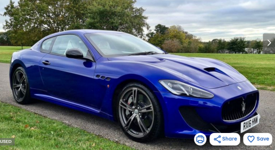
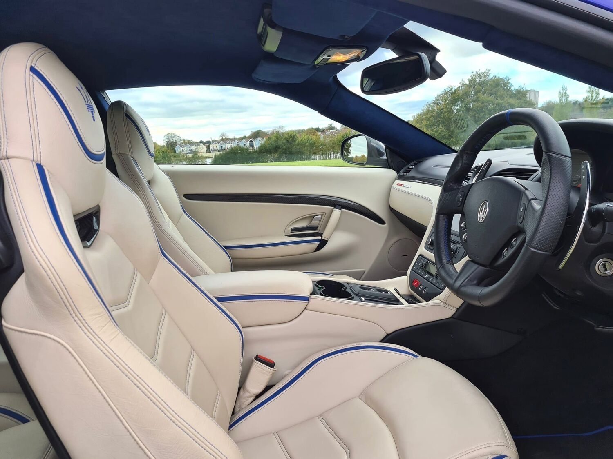
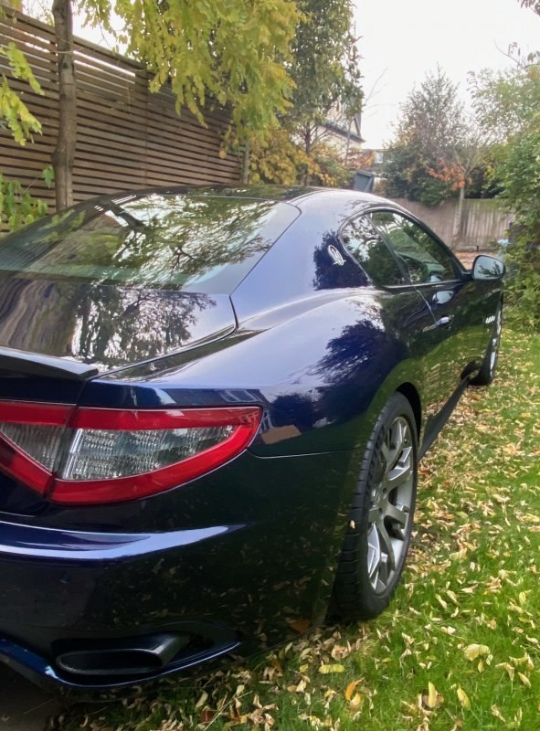

Background:
I decided a second car was needed in August 2021 and after a lot of
research, it was clear a Maserati Granturismo 4.7 MC Shift would be
perfect.
Looks are subjective, but I have always liked the GranTurismo more than any
Ferrari, Porsche or German model.
The combination of Ferrari V8 engine, a "mechanical" gearbox similar
to that in the Ferrari 599GTB, great looks and 4 practical seats and boot
space means it really is an all round car which can actually be used.
I needed a car which could fit the family and be useful for days out
(golf clubs and trolley is vital!)
After lots of browsing AutoTrader and enquiring with dealers, my
paitience was wearing thin...
The SportsMaserati opportunity...
At the start of November, a member of SportsMaserati started a thread
mentioning he was looking to buy a limited edition MC Stradale and
would therefore need to sell his MC Shift. The Stradale looked great
and he was keen to move quickly (mainly due to the blue interior)
I sent a message to the member to enquire if he would sell to me rather than part-exchange...
The Perfect Blue Stradale?


The car I was trying to buy
He had owned the car for 2 years and was quick to answer my questions. It was clear the car had
been well looked after and had an excellent service history. The car
was also known within the owners community, which is reassuring.
Some highlights of the car were:
- 2013 Sport MC Shift
- Facelift version - Main benefits are the updated interior (more modern) and 10bhp more power
- Blue exterior - I think this is much more special than boring black/grey, or common white :)
- MC Handling pack - lowers the car by 10mm, has stiffer springs, dampers and anti-roll bars, as well as a recalibrated ESP system
- Carbon pack - Interor and exterior
- Well known and "approved" by AV Engineering and Dale at PrestigeAutoWorks
This model is actually quite rare, only 46 facelift GT Sports were made with MC-shift in the UK, only 4/5 of those had the MC handling pack.
Some pre-sale pictures1234:





The Pre-Purchase Inspection
Even though everything seemed to be in order, I decided to go ahead with a Pre-Purchase Inspection and used Dale at PrestigeAutoWorks. I used Dale as he is highly recommended, fairly local and knows the car.